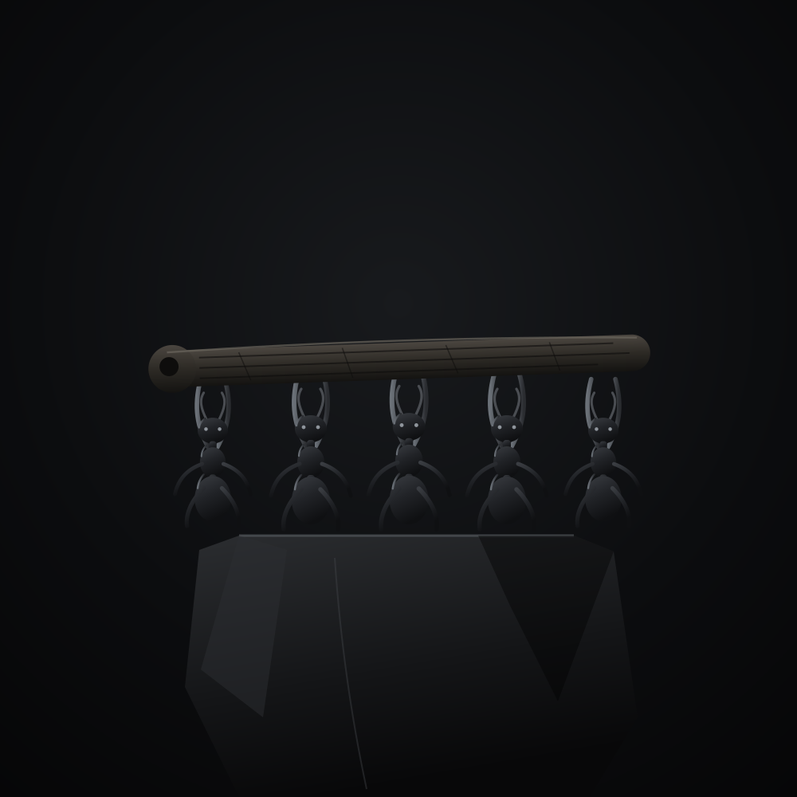

1 = 1🐜
One join, one launch
Every new ant in the X community triggers exactly one new launch — each from a fresh throwaway dev wallet, so no two launches trace back to the same hand.
Launching live · Facecam + Tek
Ants are known for working together and always helping one another — that's exactly what's missing in the trenches right now. So we built a Tek: every time a new ant joins the community, it launches a new coin. Stay active, grow together, get unlimited attention.

The colony
One ant can't move a log. A hundred ants carry it like it's nothing. That's the whole point — ants win by working together as a community and always helping one another.
The trenches forgot that. Everyone's solo, everyone's fighting for scraps. $ANTS is the opposite: a colony that shows up for each other, stays loud on X, and grows on purpose — with a Tek doing the heavy lifting on repeat.
The Tek
No manual work. Every new member of the X community fires a fresh launch — automatically.
Someone new joins the $ANTS X community. The Tek is watching the member list in real time.
It instantly launches a new coin — each one from a brand-new fresh dev wallet, never a shared one. One join, one launch.
More ants, more launches, more eyes on $ANTS. The more we grow the X community, the more attention the Tek prints — non-stop.
How it's built
Built for the community, run in the open. The Tek only ever grows the colony.
Every new ant in the X community triggers exactly one new launch — each from a fresh throwaway dev wallet, so no two launches trace back to the same hand.
Stay active on X, keep the community growing, and the Tek keeps the trenches flooded with $ANTS. The colony's reach compounds — that's the flywheel.
Let's make bagworking great again.
How to join
Join the $ANTS community on X — that's how you become an ant (and how the Tek sees you).
Install Phantom (or any Solana wallet) on your phone or browser and add some SOL.
Copy the $ANTS CA above, paste it into your wallet or a DEX, and swap.
Stay active, help the colony grow, and watch the Tek launch on every new ant.